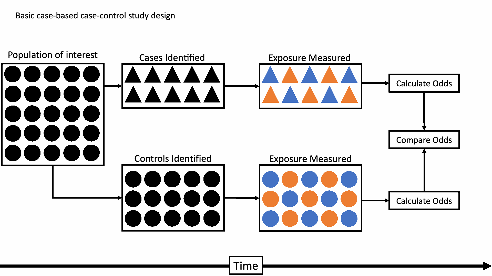

Case-Control Studies
APHS 20203 · Epidemiology & Biostatistics
October 12, 2026
Retrospective Cohort vs. Case-Control
Case-control
- Sample based on outcome and look backward for exposure.
Retrospective Cohort
Sample based on exposure and look “forward” towards the outcome
A cohort study was done, you just weren’t there to initially observe it
When Cohort Is Not Ideal
Cohort studies are powerful — but not always practical.
What if:
The disease is rare?
The outcome has a long latency period?
Long-term follow-up is too costly or infeasible?
You need results quickly?
In these situations, a different design may be more efficient.
Basic Case-Control Study Design

Case-Control Studies: Overview
Definition: Start with outcome status
Cases → Have the disease; Controls → Do not have the disease
Then look backward to assess prior exposure
Direction of Inquiry: Outcome → Exposure
Primary Measure of Association: Odds Ratio (OR)
Poll: Identify the Study Design
Researchers identify 500 patients with lung cancer and 500 patients without lung cancer. They compare prior smoking history.
What type of study is this?
A. Cohort study
B. Case-control study
C. Cross-sectional study
D. Randomized trial
Discussion: How Would You Study Lung Cancer?
If lung cancer is a rare disease, how would you design the study?
Would you start with exposure or outcome?
Would long-term follow-up be practical?
How could you efficiently identify cases?
What comparison group would you need?
Doll and Hill (1950)
Research Question: Is cigarette smoking associated with lung cancer?
Study Design:
Cases: Patients diagnosed with lung cancer
Controls: Hospital patients without lung cancer
Collected prior smoking history
Direction of Inquiry: Outcome → Exposure
Why Case-Control Was Appropriate:
Lung cancer was a rare disease
Long-term follow-up would have been impractical
Efficient comparison of prior exposure
Review: Population and Sample
Example: We want to understand the health of adults living in Texas.
| Group | Who belongs to it? | In our example |
|---|---|---|
| Target population | People we want findings to apply to | All Texas adults |
| Source population | People from whom we select participants | Adult patients at several Texas clinics |
| Study sample | People whose data we analyze | 500 participating patients |
- Chance: Would another random sample from the same source give a different estimate?
- Applicability: How well do these findings apply to all Texas adults?
Study Base Principle
Cases and controls should be “representative of the same base experience.”
If a potential control had gotten the disease, they would have been selected with the same probability as any other case
- If this is not true, you have selection bias!
Group Exercise: Shands Hospital
Shands Hospital at the University of Florida is a referral hospital for a variety of cancer diagnoses -- including bronchogenic carcinoma -- for the North Florida region where it is located. Researchers are interested in the association between bronchogenic carcinoma and a history of cigarette smoking, and they decide to conduct a case-control study. Cases are selected from the admissions records to the cancer center. Controls are randomly selected from the population of the surrounding county. Does the control group violate the study base principle?
Selection Bias in Case-Control Studies
Core Issue: Controls must represent the same source population as the cases.
- If not, the exposure comparison becomes biased.
Example (Smoking & Lung Cancer):
- If controls are selected from a group with unusually low smoking rates,
smoking may appear more strongly associated with lung cancer.
- If controls are selected from a group with unusually low smoking rates,
Key Principle:
- Controls should reflect the exposure distribution of the population that produced the cases.
Recall Bias
Definition: A type of information bias in which participants remember past exposures differently.
When it occurs
Often in case-control studies
Cases may recall exposures more carefully than controls
Key idea: Differences in memory between groups can distort the exposure–outcome association.

Interviewer and Observer Bias
Interviewer Bias
Occurs during data collection
Interviewer knowledge influences how questions are asked
Can lead to different responses between groups
Observer Bias
Occurs during outcome assessment
Observer expectations influence how outcomes are recorded
More likely when blinding is absent
Key idea: When researchers influence data collection or measurement, results may be systematically distorted.
Why Use an Odds Ratio?
In case-control studies, we cannot calculate risk directly. Why?
We start with a fixed number of cases and controls
The total population at risk is unknown
Incidence cannot be measured
Instead, we quantify association using the Odds Ratio (OR)
What Does OR Measure?
- The odds of prior exposure among cases compared to the odds of exposure among controls
Key Contrast:
Cohort → Uses Relative Risk (RR)
Case-Control → Uses Odds Ratio (OR)
Calculating Odds Ratio
| Cases | Controls | |
|---|---|---|
| Exposed | a | b |
| Not exposed | c | d |
| Odds of exposure | a/c | b/d |
Odds ratio: odds of exposure in cases versus odds of exposure in controls.
OR = (a/c) ÷ (b/d) = (a × d)/(b × c)
Smoking and Lung Cancer
Research Question: Is smoking associated with lung cancer?
Study Design:
Cases: Patients with lung cancer
Controls: Patients without lung cancer
Collected prior smoking history
OR = (A × D) / (B × C)= (647 × 27) / (622 × 2)≈ 14.0
Interpretation: The odds of prior smoking among lung cancer cases are about 14 times higher than among controls.
Conclusion: Smoking is strongly associated with lung cancer.
| Lung Cancer (+) | Lung Cancer (–) | |
|---|---|---|
| Smoker | 647 | 622 |
| Non-Smoker | 2 | 27 |
Interpreting the Odds Ratio
Interpreting the Odds Ratio (OR)
OR = 1: No association between exposure and disease
OR > 1: Exposure is associated with higher odds of disease
OR < 1: Exposure is associated with lower odds of disease (protective effect)
Important: OR reflects odds, not risk.
When the disease is rare, the OR closely approximates the Relative Risk (RR).
- When cases are rare: Total population ≈ Non-cases
Poll: Interpreting Odds Ratio
In a case-control study examining asbestos exposure and lung cancer, researchers identified 400 lung cancer cases and 400 controls without lung cancer. The Odds Ratio (OR) for asbestos exposure was 3.0.
What does this mean?
A. Exposed individuals have 3 times the risk of lung cancer
B. Asbestos exposure causes lung cancer
C. There is no association between asbestos and lung cancer
D. Lung cancer cases had 3 times the odds of prior asbestos exposure compared to controls
Poll: Identifying Bias
In a case-control study investigating the relationship between alcohol use and liver cancer, cases were recruited from a major urban hospital. Controls were recruited from a local fitness club.
Which bias is most likely?
A. Recall bias
B. Attrition bias
C. Selection bias
D. Interviewer bias
Strengths and Limitations
Strengths
Efficient for studying rare diseases
Faster and less costly than cohort studies
Require fewer participants
Useful for diseases with long latency
Limitations
Cannot directly measure incidence or risk
Vulnerable to selection bias
Prone to recall bias
Control selection can be challenging
Cohort vs. Case-Control Studies
| Feature | Cohort Study | Case-Control Study |
|---|---|---|
| Start With | Exposure | Outcome |
| Direction | Exposure → Outcome | Outcome → Exposure |
| Measure | Relative Risk (RR) | Odds Ratio (OR) |
| Best For | Rare exposures | Rare diseases |
| Time & Cost | Longer, more expensive | Faster, less expensive |
| Main Bias Concern | Loss to follow-up | Selection & recall bias |
| Can Measure Incidence? | Yes | No |